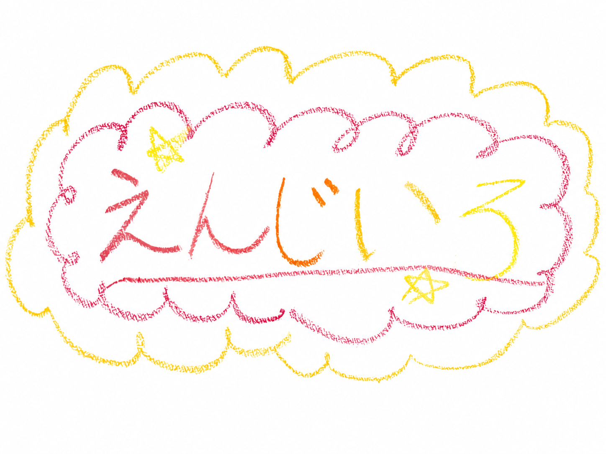

ば
ばぶ太郎
推定 3さい / 12分前
本番障害の夢を見たので、今日はふわふわの毛布にくるまっていることにします。

crayon identity
園児UIではこのクレヨン線を前面に。落ち着くモードでは、手触りだけを少し残します。
本番障害の夢を見たので、今日はふわふわの毛布にくるまっていることにします。
えらかったね。今日はログもチケットもいったんお布団の外に置いておこうね。
profile
推定 4さい。ちょっと甘えたい日。